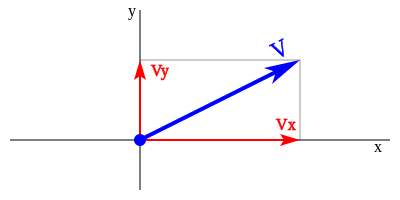
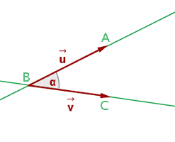
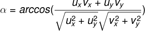
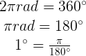
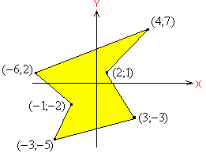
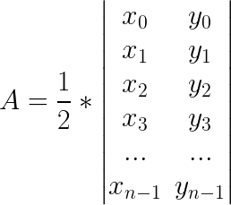

Geometría
Geometría pura vs. Geometría Computacional
- La geometría pura puede normalmente ser resuelta a mano, y sus códigos en la mayoria de los casos no son tan complejos.
- La geometría computacional requiere de un algoritmo en el computador para llegar a una respuesta.
Spoiler Alert
En el 99% de los casos, ¡NO empiecen por el geometrico computacional!
Problemas con la geometría
- Casos límite dificiles de resolver.
- Errores de precisión.
- Codificación muuuuuuuuuy tediosa.
Preparación
- La geometría maneja muchas fórmulas. La diferencia entre un "AC" y un "No intentado" puede ser simplemente conocer una fórmula, o tenerla escrita.
- Muchos algoritmos geometricos existen, pero no son tan faciles de implementar. Por eso pueden llevarse impresos (si requieren alguno, ¡Haganlo saber AQUI!
Librerias
Punto
La librería punto manejará las coordenadas (x,y) como valores double en un plano cartesiano.
Ver en githubVector Euclideano (2D)

Representa una magnitud con longitud, dirección y sentido.
Vector Euclideano (2D)
Vector representado con sus componentes en X y Y
Vector Euclideano (2D)
La libreria vector maneja las componentes en X y Y de un vector, como valores doubles. Si tenemos dos puntos A y B podemos directamente convertir estos puntos al vector A->B.
Ver en githubÁngulo
Calcular el valor del ángulo ABC (Origen en B).
Ángulo
Dados dos vectores u y v, el angulo que lo forma puede calcularse como:
Ángulo: ¿Radianes o sexagesimales?

Ángulo: ¿Radianes o sexagesimales?
Distancia Euclidiana
Distancia entre p1(x1, y1) y p2(x2, y2):

Perímetro de un polígono
Area de un polígono
Área de un polígono
Punto en un polígono
En primer lugar, se suman TODOS los ángulos formados por lados consecutivos del polígono, con centro en el punto que buscamos. Si esta suma es igual a 360° (2Pi Rad), el punto se encuentra en el poligono. De lo contrario, está fuera de el. Funciona con polígonos convexos y cóncavos.